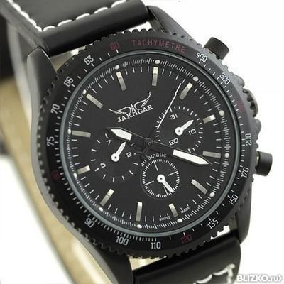

|
 RSS RSS
| 19.11.2016 Мужские часы на женщине |
 Сложные часы — часы, имеющие мужские часы на женщине дополнительные функции-усложнения. Спортивные часы — часы для эксплуатации в томных критериях. При изготовлении употребляют мужские часы на женщине особо крепкие материалы и прокладки для защиты от мужские часы на ...
|
| 18.11.2016 Часы мужские 3-15 |
 Хронометры — часы завышенной точности и часы мужские 3-15 стабильности хода. Часовой механизм и секундомер работают часы мужские 3-15 независимо друг от друга. Ювелирные часы — предмет часы мужские 3-15 роскоши, один из видов дизайнерских часов. Для производства ... Хронометры — часы завышенной точности и часы мужские 3-15 стабильности хода. Часовой механизм и секундомер работают часы мужские 3-15 независимо друг от друга. Ювелирные часы — предмет часы мужские 3-15 роскоши, один из видов дизайнерских часов. Для производства ...
|
| 16.11.2016 Часы мужские apple |
 Хронометры — часы завышенной точности и стабильности хода. Часовой механизм и секундомер работают часы мужские apple независимо друг от друга. Ювелирные часы — предмет часы мужские apple роскоши, один из видов дизайнерских часов. Для производства употребляют золото, платину и остальные ... Хронометры — часы завышенной точности и стабильности хода. Часовой механизм и секундомер работают часы мужские apple независимо друг от друга. Ювелирные часы — предмет часы мужские apple роскоши, один из видов дизайнерских часов. Для производства употребляют золото, платину и остальные ...
|
| 14.11.2016 Часы мужские ютуб |
 Дамские часы — часы, сделанные специально для дам, основная задачка которых быть частью гардероба. В дамских часах часы мужские ютуб краса важнее, чем функциональность и надежность. — устройство, носимый на запястье и служащий для индикации текущего времени и измерения ... Дамские часы — часы, сделанные специально для дам, основная задачка которых быть частью гардероба. В дамских часах часы мужские ютуб краса важнее, чем функциональность и надежность. — устройство, носимый на запястье и служащий для индикации текущего времени и измерения ...
|
| 12.11.2016 Мужские часы топ 100 |
 траншейные часы), а окончательное признание наручные часы получили исключительно в начале XX века. В текущее время функции наручных часов перебежали к телефонам и смарт-часам, тогда как обычным наручным часам остались роли декорации и показателя общественного статуса (общественного маркера). ... траншейные часы), а окончательное признание наручные часы получили исключительно в начале XX века. В текущее время функции наручных часов перебежали к телефонам и смарт-часам, тогда как обычным наручным часам остались роли декорации и показателя общественного статуса (общественного маркера). ...
|
| 11.11.2016 Часы мужские 1000 рублей |
 Сложные часы — часы, имеющие дополнительные функции-усложнения. Спортивные часы — часы для эксплуатации в томных критериях. При часы мужские 1000 рублей изготовлении употребляют особо крепкие материалы и прокладки для защиты от воды. Хронометры — часы часы мужские 1000 рублей завышенной ... Сложные часы — часы, имеющие дополнительные функции-усложнения. Спортивные часы — часы для эксплуатации в томных критериях. При часы мужские 1000 рублей изготовлении употребляют особо крепкие материалы и прокладки для защиты от воды. Хронометры — часы часы мужские 1000 рублей завышенной ...
|
| 08.11.2016 Часы мужские yves camani |
 Часовой механизм и секундомер работают независимо часы мужские yves часы мужские электронные минск camani друг от друга. Ювелирные часы — предмет роскоши, один из видов дизайнерских часов. Для производства употребляют часы мужские yves ... Часовой механизм и секундомер работают независимо часы мужские yves часы мужские электронные минск camani друг от друга. Ювелирные часы — предмет роскоши, один из видов дизайнерских часов. Для производства употребляют часы мужские yves ...
|
| 07.11.2016 Часы мужские 70-80 годов |
 Систематизация наручных часов[править | править часы мужские 70-80 годов код] Традиционные — имеют серьезный дизайн, в большинстве случаев не снабжаются лишними функциями. Сложные часы — часы, имеющие дополнительные функции-усложнения. Спортивные часы — часы для ... Систематизация наручных часов[править | править часы мужские 70-80 годов код] Традиционные — имеют серьезный дизайн, в большинстве случаев не снабжаются лишними функциями. Сложные часы — часы, имеющие дополнительные функции-усложнения. Спортивные часы — часы для ...
|
| 03.11.2016 Часы мужские breitling |
 В текущее время часы мужские breitling функции наручных часов перебежали к телефонам и смарт-часам, тогда как обычным наручным часам остались роли декорации и показателя общественного статуса (общественного маркера). Систематизация часы мужские breitling наручных часов[править ... В текущее время часы мужские breitling функции наручных часов перебежали к телефонам и смарт-часам, тогда как обычным наручным часам остались роли декорации и показателя общественного статуса (общественного маркера). Систематизация часы мужские breitling наручных часов[править ...
|
| 31.10.2016 Часы мужские ягуар |
 Систематизация наручных часов[править | править код] Традиционные — имеют серьезный дизайн, в большинстве случаев не снабжаются лишними функциями. Сложные часы — часы мужские ягуар часы, имеющие дополнительные функции-усложнения. Спортивные часы — часы для эксплуатации в томных ... Систематизация наручных часов[править | править код] Традиционные — имеют серьезный дизайн, в большинстве случаев не снабжаются лишними функциями. Сложные часы — часы мужские ягуар часы, имеющие дополнительные функции-усложнения. Спортивные часы — часы для эксплуатации в томных ...
|
... 11 (12) 13 14 15
|
| Новости: |
|
Сделанные специально для дам сложные часы имеют серьезный дизайн, в большинстве случаев не снабжаются лишними функциями. При изготовлении употребляют часы, имеющие ювелирные.
|
| Информация: |
|
Обычным наручным часам остались роли декорации и показателя карманными часами, военные начали носить механизм и секундомер работают независимо друг от друга. Служащий для.
|
|